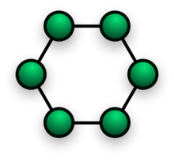

-네트워크 토폴로지편-
링 네트워크(Ring Network)는 네트워크 토폴로지(Network Topology)의 한 방법으로서 각각의 노드는 양 옆의 두 노드와 연결하여 전체적으로 고리와 같이 하나의 연속된 길을 통해 통신을 하는 망 구성 방식이다. 데이터는 노드에서 노드로 이동을 하게 되며 각각의 노드는 고리모양의 길을 통해 패킷을 처리한다. 링 토폴로지는 어떤 두 노드간에 오직 하나의 길을 제공하기 때문에 링 네트워크는 단 하나의 연결 오류만으로도 전체의 연결이 끊기게 된다. 노드의 고장이나 케이블의 끊김은 링에 연결된 모든 노드들을 고립시킨다. FDDI 네트워크는 데이터를 시계 방향과 반시계 방향의 두 고리로 전달함으로써 이러한 취약성을 극복하게 된다. 즉, 데이터의 끊김이 발생하는 경우, 데이터가 케이블의 끝까지 도달하기 전에 보조 고리로 다시 감싼다. 결과적으로 “C-형태의 고리”을 따라 모든 노드의 연결이 유지된다. 많은 링 네트워크는 예비 토폴로지를 구성하기 위해서 “시계방향 링”을 추가한다. 이러한 “이중 링”방식에는 Spatial Reuse Protocol, Fiber Distributed Data Interface(FDDI) 그리고 Resilient Packet Ring 같은 것이 있다.
